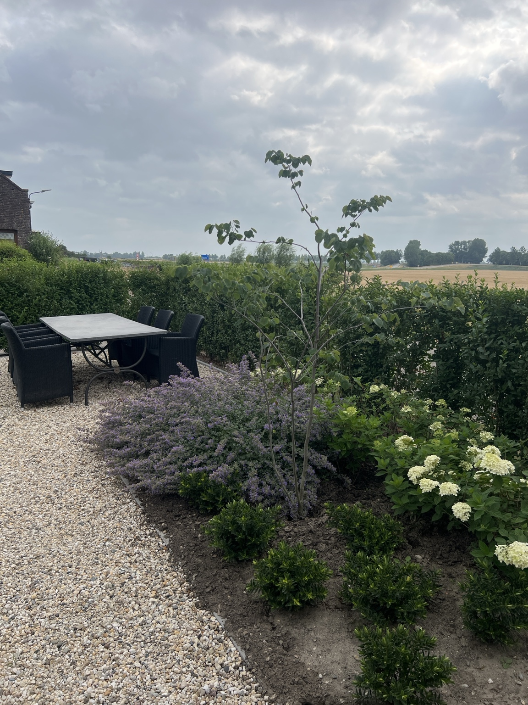
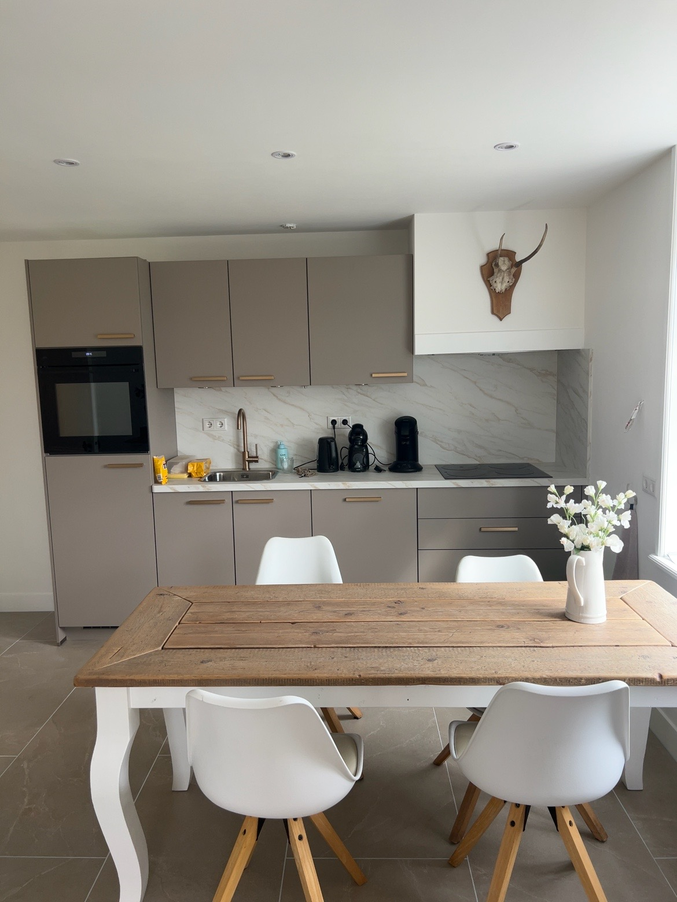
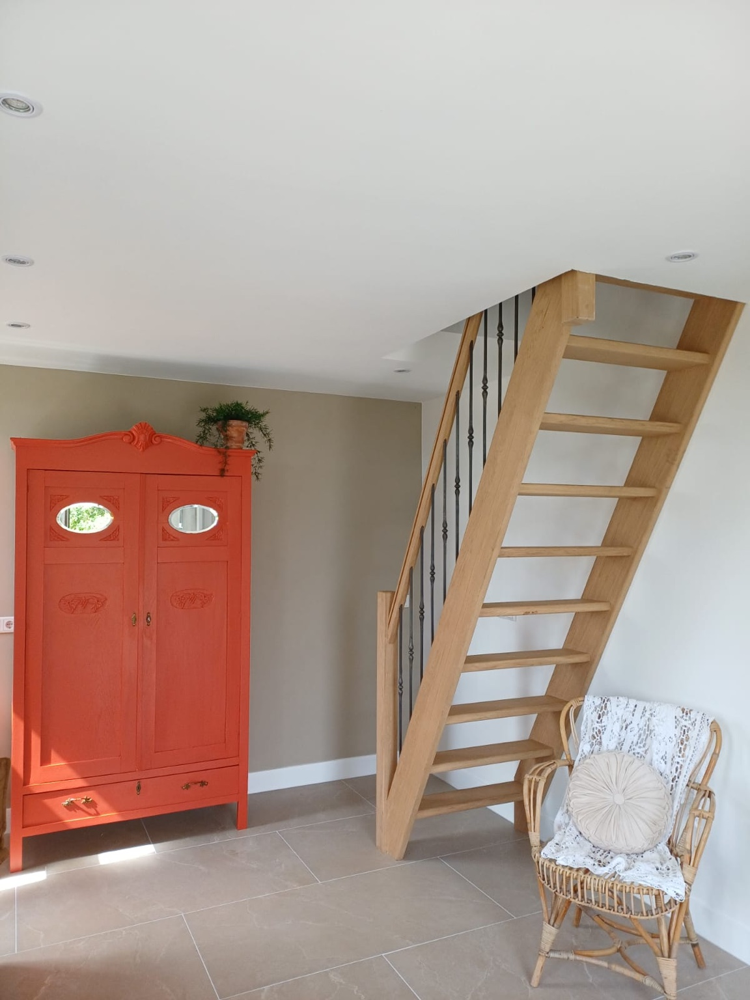
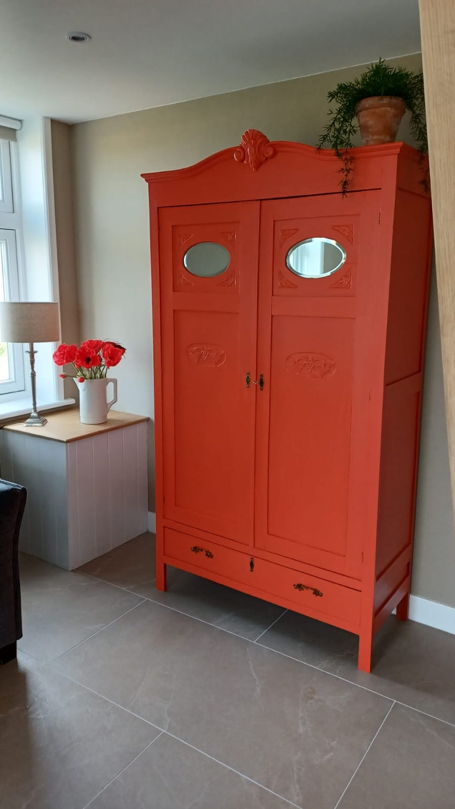
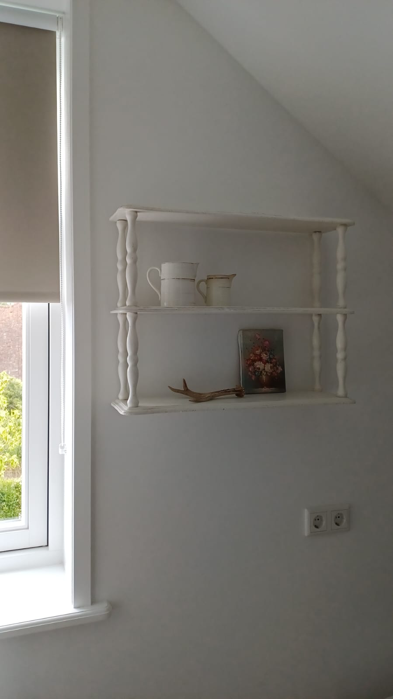
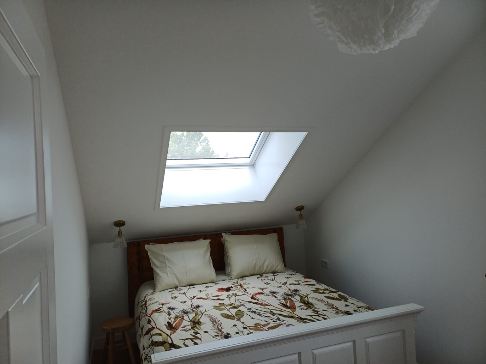
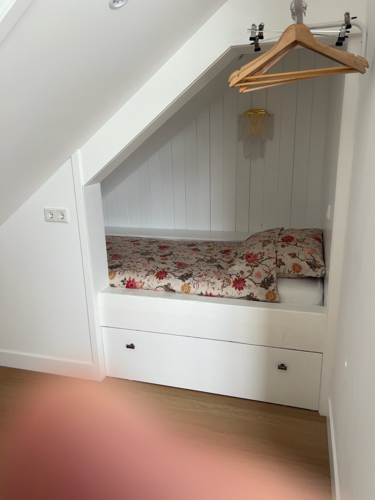
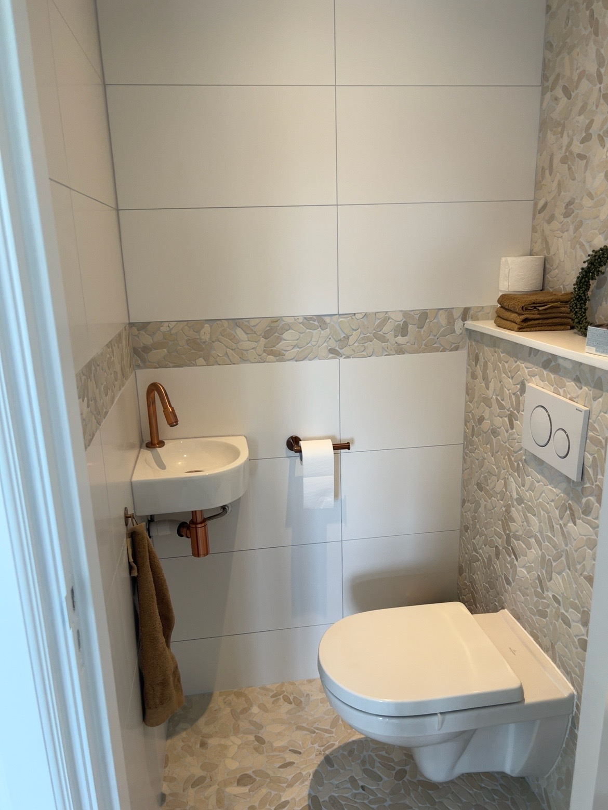
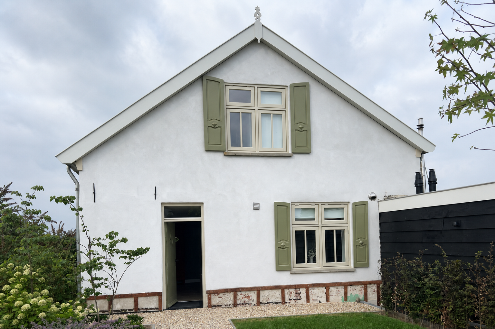

Thuis aan de Zeeuwse kust
Een authentiek dijkhuisje met rust, karakter en comfort. Voor twee volwassenen en maximaal twee kinderen.
Klein van formaat, rijk aan sfeer
By Moos is geen standaard vakantiehuis. Het is een zorgvuldig ingericht Zeeuws dijkhuisje waarin oude details, warme materialen en eigentijds comfort samenkomen.
De woning is bedoeld voor een gezin: twee volwassenen en maximaal twee kinderen. Beneden vind je de leefruimte, keuken en badkamer. Boven liggen de ouderkamer en de knusse kinderkamer.

Rustige luxe met Zeeuws karakter
Warme eik, natuurlijke tinten en uitgesproken details geven het huis zijn eigen gezicht.







Comfortabel voor een jong gezin
De ouderkamer onder het schuine dak is licht en rustig. De tweede slaapruimte is een knusse bedstee voor maximaal twee kinderen.
By Moos is niet ingericht voor twee stellen.
Authentiek
Een echt dijkhuisje, niet een huisje op een vakantiepark.
Rustig
Een plek om te vertragen, dichtbij water en landschap.
Gezinsgericht
Bewust ingericht voor twee volwassenen en maximaal twee kinderen.
Persoonlijk
Kleinschalig verblijf met aandacht voor sfeer en detail.
Strand, water en Zeeuwse dorpen binnen bereik
Vanuit Kamperland bereik je eenvoudig het Veerse Meer, de Noordzeekust en historische plaatsen zoals Veere. De omgeving leent zich voor fietsen, wandelen, watersport en lange dagen buiten.
Ook voor een rustige dag rondom het huis is By Moos een prettige basis: koffie in de tuin, een boek in de zon en ’s avonds eten in een van de restaurants in de omgeving.

Wanneer komen jullie naar Zeeland?
Stuur de gewenste periode en samenstelling van het gezelschap. Je ontvangt daarna persoonlijk bericht over beschikbaarheid en prijs.
E-mail
monicavanleeuwen23@gmail.com
Een aanvraag is nog geen definitieve reservering. De boeking is rond zodra deze schriftelijk is bevestigd.